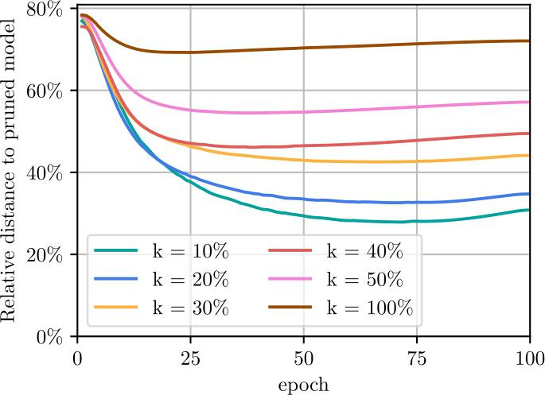
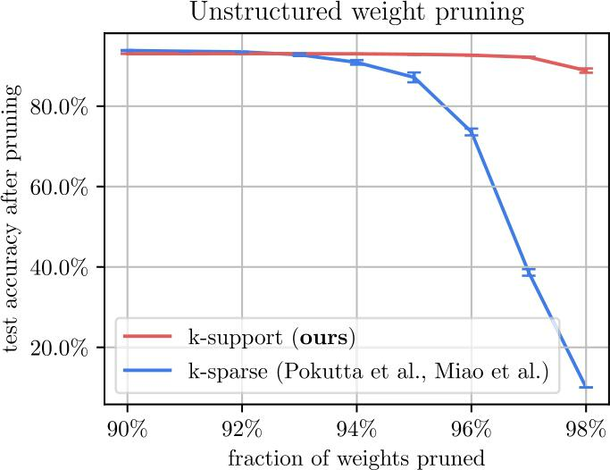
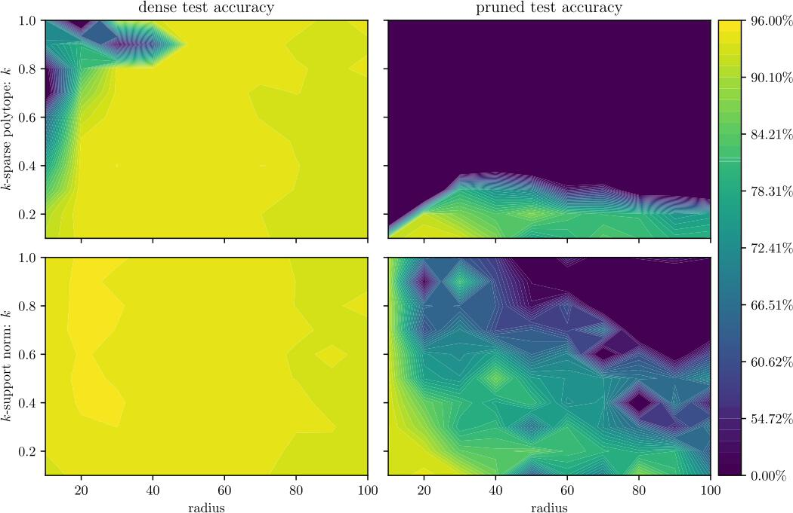
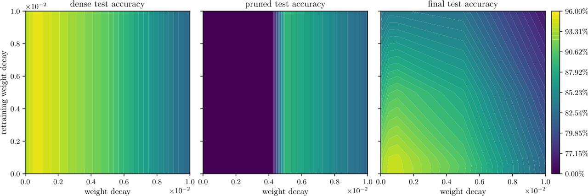
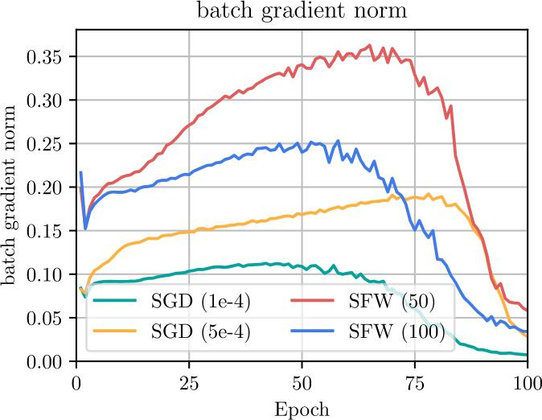
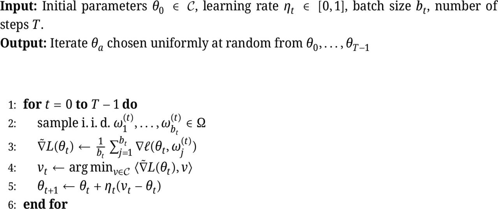

4 Discussion and outlook
We proposed to utilize a versatile family of norm constraints to, together with the SFW algorithm, train deep NNs to state-of-the-art dense performance as well as robustness to compression for a wide range of compression ratios. Our experimental results show that SFW can leverage highly structured feasible regions to avoid performance degradation when performing convolutional filter pruning or low-rank tensor decomposition. For the latter, SFW can significantly outperform similar methods both in terms of accuracy and efficiency. As a special case, our proposed approach includes the unstructured pruning case and we showed how utilizing the proposed norm can mitigate the drawbacks of and improve upon the results of Miao et al. [53]. We hope that our findings regarding the importance of the learning rate rescaling as well as Theorem 10.2 stimulate further research in the direction of compression-aware training with SFW.
We emphasize that our results hold primarily in the setting that we described, namely that of compression-aware training, where the training is sparsity-agnostic and retraining is prohibitive. Our goal was to show the versatility of SFW, which provides a suitable algorithmic framework for enforcing structure throughout training. If the sparsity can be incorporated into training, significantly more complex approaches can be applied.
In the following, we detail the technical details, hyperparameter grids, additional experiments as well as proofs of the theoretical results. Since the initial version of this paper, there has been follow-up work to improve the performance of pruned models in the case where retraining is feasible. We show that weight-averaging multiple models retrained from the same pruned base model, albeit with varying hyperparameter configuration, yields sparse models with enhanced generalization capabilities [86]. Similarly, we address the issue of retraining in a resource-constrained setting by retraining only a small, but critical subset of the parameters without performance degradation compared to full retraining [84].
A.1 Technical details
We employ momentum SFW [57] and local constraints, that is, we use a separate feasible region per layer. Note that the expressivity of the network can be severely limited if τ is chosen too small. As suggested by Pokutta et al. [57], we do not tune the radius τ of the feasible region directly but rather specify a scalar factor and set the -diameter of the feasible region of each layer as
where the expected -norm of the layer parameters θ are simply estimated by computing the mean among multiple default initializations. is then in turn used to compute τ such that . This allows us to control the -regularization strength of each layer. We do not prune biases and batch-normalization parameters, as they only account for a small fraction of the total number of parameters yet are crucial for obtaining well-performing models [21]. Apart from the direct comparison between diameter and gradient rescaling, we use gradient rescaling throughout all experiments.
While there exist multiple successful strategies to retrain after pruning [61], [40], [85], the compression-aware training setting requires the methods to be compared directly after pruning without retraining. However, similar to Li et al. [45] and Peste et al. [56], we notice that the validation accuracy after pruning can be significantly increased by recomputing the batch-normalization [33] statistics, which have to be recalibrated since the preactivations of the hidden layers are distorted by pruning. To that end, we recompute the statistics on the train data set after pruning and note that in practice only a fraction of the training data is necessary to recalibrate the batch-normalization layers.
In the following, we state technical details of our approaches to structured and unstructured pruning, as well as low-rank matrix decomposition.
A.1.1 Structured filter and unstructured pruning
As outlined in the main section, we follow the approach of Li et al. [46] and remove the convolutional filters with smallest -norm. Since each filter might correspond to a different number of parameters, depending on the convolutional layer it is located in, the -norm of filters is incomparable among different layers. We hence follow the local approach and prune the same amount in each convolutional layer until the desired sparsity is met. Since this will lead to the same theoretical speedup, independent of the algorithm at stake, we omit these values.
For unstructured pruning, we employ the usual magnitude pruning, that is, we remove the parameters with smallest absolute value until we meet the desired level of compression. As we found it to work best among all algorithms, we prune globally, that is, we select the smallest weights among all network parameters eligible for pruning. We note however that there exists several different magnitude-based selection approaches [cf., e. g., 26], [cf., e. g., 24], [cf., e. g., 43].
A.1.2 Low-rank matrix decomposition
We describe the rationale behind the decomposition of matrices with (preferably) low rank. Low-rank matrix decomposition is centered around the idea of truncating the singular value decomposition (SVD). Let be the SVD of rank-r matrix , where , are the singular vectors to singular values . The goal is now to find the best low-rank approximation to θ, namely to solve
By the Eckart–Young–Mirsky theorem, a minimizer is given by , where the smallest singular values are truncated. If the singular values now decay rapidly, that is, only the first t singular values contain most of the energy of θ, then this approximation can be applied as a post-processing step without much change in the output of a linear layer [18]. Consequently, a natural approach to ensure stability w. r. t. matrix decomposition is based on encouraging the parameter matrices to have low-rank throughout training, most prominently done by regularizing the nuclear norm of the weight matrix [65], [3]. If t is small, then the number of FLOPs can be drastically reduced by decomposing a layer into multiple layers. For linear layers this is straightforward: let be weights and biases of a linear layer with SVD of θ as above. For input x, the layer computes
being interpretable as the consecutive application of two linear layers: followed by , possibly reducing the number of parameters from to . For a four-dimensional convolutional tensor , where c is the number of in-channels, n the number of convolutional filters, and d is the spatial size, we cannot directly construct the SVD. However, we follow an approach similar to those of Alvarez and Salzmann [3] and Idelbayev and Carreira-Perpinán [32], interpreting θ as a matrix, whose truncated SVD decomposition allows us to replace the layer by two consecutive convolutional layers, the first one having t filters, c channels, and spatial size d, followed by n filters, t channels, and spatial size of one.
A.2 Experimental setup and extended results
Table 10.2 shows the exact training configurations we used throughout all experiments, where we always relied on a linearly decaying learning rate, as suggested by Li et al. [47]. In the following, we state the hyperparameter grids used as well as full tables and missing plots.
Table 10.2Exact training configurations used throughout the experiments. For all data sets and architectures we use a linear decay of the learning rate starting from 0.1. The dense test accuracy refers to the optimal accuracy we achieve using momentum SGD with weight decay. For the semantic segmentation task we report the Intersection-over-Union (IoU) on the test set.
| Data set | Network (number of weights) | Epochs | Batch size | Momentum | Dense test accuracy/IoU |
| CIFAR-10 | ResNet-18 (11 Mio) | 100 | 128 | 0.9 | 95.0 % ±0.04 % |
| CIFAR-100 | WideResNet-28x10 (37 Mio) | 100 | 128 | 0.9 | 76.7 % ±0.2 % |
| TinyImagenet | ResNet-50 (26 Mio) | 100 | 128 | 0.9 | 64.9 % ±0.1 % |
| ImageNet | ResNet-50 (26 Mio) | 90 | 1024 | 0.9 | 75.35 % ±0.1 % |
| CityScapes | PSPNet (68 Mio) | 200 | 12 | 0.9 | 58.5 IoU ±0.5 |
A.2.1 Structured filter pruning
If not specified otherwise, we use weight decay values of 1e-4, 5e-4. Tables 10.3, 10.4, 10.5 and 10.6 compare the filter pruning approaches for CIFAR-10, CIFAR-100, TinyImagenet and ImageNet, respectively.
CIFAR-10 hyperparameter grids
-
SparseFW: , -multiplier .
-
SSL: Filter group penalty factor λ (1e-5, 5e-5, 1e-4, 5e-4, 1e-3, 5e-3).
-
GLT: Filter group penalty factor λ (1e-5, 5e-5, 1e-4, 5e-4, 1e-3, 5e-3), lasso tradeoff (0, 0.5).
-
ABFP: , filter group penalty factor λ (1e-5, 5e-5, 1e-4, 5e-4, 1e-3, 5e-3).
-
SFP: , sparsification start epoch {0,10,25}.
CIFAR-100 hyperparameter grids
-
SparseFW: , -multiplier .
-
SSL: Filter group penalty factor λ (1e-5, 5e-5, 1e-4, 5e-4, 1e-3, 5e-3).
-
GLT: Filter group penalty factor λ (1e-5, 5e-5, 1e-4, 5e-4, 1e-3, 5e-3), lasso tradeoff (0,0.5).
-
ABFP: , filter group penalty factor λ (1e-5, 5e-5, 1e-4, 5e-4, 1e-3, 5e-3).
-
SFP: , sparsification start epoch {0,10,25}.
TinyImagenet hyperparameter grids
-
SparseFW: , -multiplier .
-
SSL: Filter group penalty factor λ (1e-5, 5e-5, 1e-4, 5e-4, 1e-3, 5e-3).
-
GLT: Filter group penalty factor λ (1e-5, 5e-5, 1e-4, 5e-4, 1e-3, 5e-3), lasso tradeoff (0,0.5).
-
ABFP: , filter group penalty factor λ (1e-5, 5e-5, 1e-4, 5e-4, 1e-3, 5e-3).
-
SFP: , sparsification start epoch {0,20,50}.
Imagenet hyperparameter grids
If not specified otherwise, we use weight decay values of 1e-4 for all algorithms.
-
SparseFW: , -multiplier .
-
SSL: Filter group penalty factor λ (1e-5, 5e-5, 1e-4, 5e-4, 1e-3, 5e-3).
-
GLT: Filter group penalty factor λ (1e-5, 5e-5, 1e-4, 5e-4, 1e-3, 5e-3), lasso tradeoff (0,0.5).
-
ABFP: , filter group penalty factor λ (1e-5, 5e-5, 1e-4, 5e-4, 1e-3, 5e-3).
-
SFP: , sparsification start epoch {0,20,50}.

Figure 10.4 ResNet-18 on CIFAR-10: Relative distance to filter pruned model corresponding to 70% sparsity when training with the proposed approach and varying the fraction of activated filters.
Table 10.3ResNet-18 on CIFAR-10: Comparison of filter pruning approaches. For each sparsity, we indicate the achieved test accuracy after pruning averaged over all random seeds including standard deviation.
| Sparsity | ||||
| Method | 60 % | 70 % | 80 % | 90 % |
| Baseline | 60.32 ±0.18 | 32.83 ±0.52 | 14.49 ±4.68 | 10.92 ±0.20 |
| SparseFW | 90.72 ±0.09 | 90.39 ±0.16 | 87.51 ±0.44 | 35.15 ±1.30 |
| SSL | 91.26 ±0.13 | 87.13 ±1.72 | 63.66 ±0.36 | 16.25 ±1.24 |
| GLT | 68.54 ±6.12 | 45.42 ±6.99 | 21.03 ±3.69 | 9.36 ±0.22 |
| ABFP | 91.45 ±0.49 | 91.43 ±0.52 | 91.17 ±0.42 | 28.91 ±0.71 |
| SFP | 88.90 ±3.78 | 67.66 ±17.25 | 28.44 ±12.21 | 10.55 ±1.33 |
Table 10.4WideResNet on CIFAR-100: Comparison of filter pruning approaches. For each sparsity, we indicate the achieved test accuracy after pruning averaged over all random seeds including standard deviation.
| Sparsity | ||||
| Method | 10 % | 20 % | 30 % | 40 % |
| Baseline | 71.78 ±2.29 | 65.30 ±2.82 | 51.33 ±0.34 | 35.00 ±2.59 |
| SparseFW | 72.21 ±0.30 | 72.24 ±0.29 | 72.20 ±0.23 | 71.23 ±0.18 |
| SSL | 72.10 ±1.20 | 67.51 ±0.25 | 59.26 ±0.77 | 42.18 ±2.67 |
| GLT | 74.08 ±0.87 | 69.37 ±1.54 | 54.43 ±4.77 | 28.19 ±6.30 |
| ABFP | 71.49 ±0.12 | 71.50 ±0.17 | 71.53 ±0.11 | 71.51 ±0.13 |
| SFP | 73.45 ±0.35 | 73.47 ±0.34 | 73.05 ±0.04 | 63.82 ±2.14 |
Table 10.5ResNet-50 on TinyImagenet: Comparison of filter pruning approaches. For each sparsity, we indicate the achieved test accuracy after pruning averaged over all random seeds including standard deviation.
| Sparsity | ||||||
| Method | 10 % | 20 % | 30 % | 40 % | 50 % | 60 % |
| Baseline | 62.20 ±0.26 | 57.44 ±0.04 | 49.69 ±0.47 | 39.63 ±0.69 | 26.75 ±1.32 | 13.04 ±0.46 |
| SparseFW | 62.49 ±0.15 | 62.51 ±0.03 | 62.34 ±0.13 | 61.84 ±0.22 | 60.98 ±0.03 | 58.01 ±0.41 |
| SSL | 60.44 ±0.37 | 58.86 ±0.59 | 56.58 ±1.46 | 53.06 ±2.28 | 46.82 ±2.69 | 36.79 ±2.11 |
| GLT | 60.71 ±0.46 | 57.47 ±1.09 | 51.75 ±0.52 | 42.96 ±1.36 | 30.09 ±1.17 | 14.86 ±1.21 |
| SFP | 62.06 ±0.38 | 62.07 ±0.37 | 62.06 ±0.37 | 62.06 ±0.37 | 49.31 ±1.33 | 26.76 ±2.22 |
| ABFP | 60.28 ±0.63 | 60.31 ±0.69 | 60.28 ±0.58 | 60.20 ±0.59 | 60.20 ±0.49 | 59.99 ±0.55 |
Table 10.6ResNet-50 on Imagenet: Comparison of filter pruning approaches. For each sparsity, we indicate the achieved test accuracy after pruning averaged over all random seeds including standard deviation.
| Sparsity | ||||
| Method | 10 % | 20 % | 30 % | 40 % |
| Baseline | 65.37 ±0.25 | 37.78 ±1.46 | 7.33 ±0.48 | 0.65 ±0.04 |
| SparseFW | 70.50 ±0.19 | 69.28 ±0.00 | 66.03 ±0.26 | 58.95 ±0.67 |
| SSL | 70.73 ±0.08 | 60.05 ±0.19 | 32.08 ±0.35 | 9.58 ±0.30 |
| GLT | 72.93 ±0.20 | 63.39 ±1.98 | 41.80 ±0.36 | 14.53 ±1.94 |
| SFP | 70.69 ±0.07 | 69.97 ±0.38 | 69.28 ±0.89 | 17.92 ±7.73 |
| ABFP | 70.54 ±0.23 | 69.33 ±0.33 | 66.29 ±1.56 | 59.27 ±0.39 |
A.2.2 Unstructured weight pruning
CIFAR-10 hyperparameter grids
For both the k-sparse polytope as well as k-support norm ball, we tune the fractional and the multiplier .

Figure 10.5 ResNet-18 on CIFAR-10: Accuracy-vs.-sparsity tradeoff curves for unstructured weight pruning comparing our approach to the existing k-sparse approach.

Figure 10.6 ResNet-18 on CIFAR-10: Contour plot when performing a large hyperparameter search over the radius and k of the feasible regions, where the first row corresponds to the k-sparse polytope and the second one corresponds to the k-support norm ball. The left column shows the test accuracy before pruning, while the right column shows the test accuracy after pruning. The k-support norm approach leads to better performing dense models given the hyperparameter search at stake, which in turn are more stable to pruning.
Figure 10.6 compares the two feasible regions in an even larger hyperparameter search. The rows correspond to the k-sparse polytope (above) and k-support norm ball (below), respectively. The left column shows a heatmap of the test accuracy before pruning. While both approaches lead to well performing models for a wide range of hyperparameter configurations (indicated as the radius multiplier w on the x-axis and k on the y-axis), the k-support norm ball reaches higher results and converges properly for all configurations at stake. The k-sparse polytope approach fails to yield adequately trained dense models when the radius is relatively small but k becomes larger, which is counterintuitive, since larger k allows a larger fraction of the parameters to be activated. The right column shows the corresponding heatmap of the test accuracy right after pruning. Clearly, the proposed approach is robust to pruning for a wider hyperparameter range.

Figure 10.7 ResNet-18 on CIFAR-10: Test accuracy heatmap before pruning (left), after pruning (middle) and after retraining (right) when training SGD and applying One-Shot pruning, tuning both the weight decay during training (x-axis) as well as during retraining (y-axis).
Miao et al. [53] showed that SFW (with k-sparse polytope constraints) outperforms SGD with weight decay, which in turn clearly, and unsurprisingly, outperforms the SFW-based approach when it is allowed to retrain. Our experiments indicate that while being less robust to pruning, SGD is able to reach on-par or better results after retraining, even when SFW is allowed to be retrained for the same amount of time. Leaving the domain of compression-aware training, this raises a more general question: in the case that retraining is not prohibited, is it beneficial to aim for robustness at pruning when trying to maximize the post-retraining accuracy?
Figure 10.7 illustrates an experiment where we investigate this exact question by performing One-Shot IMP [26] to a sparsity of 95 % and retraining for 10 epochs using LLR [85]. We tuned both the weight decay for regular retraining as well as the weight decay for the retraining phase. Not surprisingly, there is a weight decay sweet spot when it comes to maximizing the prepruning accuracy (left). The middle plot shows that higher weight decay typically leads to more robustness to pruning, however a too large weight decay hinders convergence of the dense model and might lower the performance after pruning. Surprisingly, however, as depicted in the right plot showing the test accuracy after retraining, the optimal parameter configuration is the one that leads to the highest accuracy before pruning, which is also the least robust to pruning. This aligns with previous findings of Bartoldson et al. [5], who question the strive for pruning stability when retraining is not prohibitive.
A.2.3 Low-rank matrix decomposition
Tables 10.7, 10.8, 10.9, 10.10 and 10.11 compare the filter pruning approaches for CIFAR-10, CIFAR-100, TinyImagenet, ImageNet and CityScapes, respectively.
CIFAR-10 hyperparameter grids
-
SparseFW: , -multiplier .
-
NUC: Nuclear norm penalty factor λ (1e-5, 5e-5, 1e-4, 5e-4, 1e-3, 8e-3, 5e-3, 1e-2, 5e-2).
-
SVDEnergy: Nuclear norm thresholding λ (1e-2, 5e-2, 1e-1, 3e-1, 5e-1, 7e-1, 9e-1, 1e-0, 5e-0).
-
FR: Force regularization penalty factor λ (1e-5, 5e-5, 1e-4, 5e-4, 1e-3, 8e-3, 5e-3, 1e-2, 5e-2).
-
TRP: Nuclear norm penalty factor λ (0, 1e-4, 5e-4, 1e-3), Singular value threshold (2e-2, 5e-2). The reparameterization using the truncated SVD is applied after each epoch except the last.
CIFAR-100 hyperparameter grids
-
SparseFW: , -multiplier .
-
NUC: Nuclear norm penalty factor λ (1e-6, 5e-6, 1e-5, 5e-5, 1e-4, 5e-4, 1e-3, 5e-3, 1e-2, 5e-2).
-
SVDEnergy: Nuclear norm thresholding λ (1e-2, 5e-2, 1e-1, 3e-1, 5e-1, 7e-1, 9e-1, 1e-0, 5e-0), Weight decay (1e-4, 2e-4, 5e-4).
-
FR: Force regularization penalty factor λ (1e-5, 5e-5, 1e-4, 5e-4, 1e-3, 8e-3, 5e-3, 1e-2, 5e-2).
-
TRP: Nuclear norm penalty factor λ (1e-5, 5e-5, 1e-4, 5e-4, 1e-3, 5e-3), Singular value threshold (1e-1, 2e-1). The reparameterization using the truncated SVD is applied after each epoch except the last.
TinyImageNet hyperparameter grids
-
SparseFW: , -multiplier .
-
NUC: Nuclear norm penalty factor λ (1e-6, 5e-6, 1e-5, 5e-5, 1e-4, 5e-4, 1e-3, 5e-3).
-
SVDEnergy: Nuclear norm thresholding λ (1e-2, 5e-2, 1e-1, 3e-1, 5e-1, 7e-1, 9e-1, 1e-0, 5e-0).
-
FR: Force regularization penalty factor λ (1e-5, 5e-5, 1e-4, 5e-4, 1e-3, 8e-3, 5e-3, 1e-2, 5e-2).
-
TRP: Nuclear norm penalty factor λ (0, 1e-5, 5e-5, 1e-4, 5e-4), Singular value threshold (1e-1, 2e-1). The reparameterization using the truncated SVD is applied after each epoch except the last.
ImageNet hyperparameter grids
If not specified otherwise, we use weight decay values of for all algorithms.
-
SparseFW: , -multiplier .
-
NUC: Nuclear norm penalty factor λ (1e-5, 5e-5, 1e-4, 5e-4, 1e-3, 5e-3).
-
SVDEnergy: Nuclear norm thresholding λ (1e-2, 5e-2, 1e-1, 3e-1, 5e-1, 7e-1, 9e-1, 1e-0, 5e-0).
-
FR: Force regularization penalty factor λ (1e-5, 5e-5, 1e-4, 5e-4, 1e-3, 8e-3, 5e-3, 1e-2, 5e-2).
-
TRP: Nuclear norm penalty factor λ (0, 1e-4, 5e-4, 1e-3, 5e-3), Singular value threshold (1e-1, 2e-1). The reparameterization using the truncated SVD is applied after each epoch except the last.
CityScapes hyperparameter grids
-
SparseFW: , -multiplier .
Table 10.7ResNet-18 on CIFAR-10: Comparison of approaches for encouraging low-rank matrices throughout training. The second column indicates the images-per-second throughput throughout training, where higher throughput corresponds to higher efficiency.
Sparsity Method # img/s 40 % 50 % 60 % 70 % 80 % 90 % Baseline 5664 93.19 ±0.23 93.02 ±0.13 91.66 ±0.17 89.95 ±0.14 82.07 ±1.41 53.07 ±1.98 SparseFW 1156 92.19 ±0.11 92.12 ±0.21 92.14 ±0.23 91.96 ±0.22 90.72 ±0.05 74.94 ±2.40 NUC 566 92.56 ±0.18 92.48 ±0.27 92.59 ±0.17 92.45 ±0.33 89.82 ±0.07 64.83 ±1.16 SVDEnergy 493 92.75 ±0.81 92.62 ±0.64 92.48 ±0.30 91.68 ±0.42 87.99 ±2.18 65.23 ±8.99 FR 4397 94.75 ±0.03 94.46 ±0.01 94.02 ±0.05 92.54 ±0.32 85.39 ±0.43 56.94 ±4.11 TRP 565 92.59 ±0.47 92.68 ±0.37 92.59 ±0.38 92.01 ±0.52 89.05 ±1.97 61.85 ±1.77 -
NUC: Nuclear norm penalty factor λ (1e-5, 5e-5, 1e-4, 5e-4, 1e-3, 5e-3).
-
SVDEnergy: Nuclear norm thresholding λ (1e-6, 5e-6, 1e-5, 5e-5, 1e-2, 5e-2, 1e-1, 5e-1, 1e-0, 5e-0).
-
FR: Force regularization penalty factor λ (1e-5, 5e-5, 1e-4, 5e-4, 1e-3, 8e-3, 5e-3, 1e-2, 5e-2).
-
TRP: Nuclear norm penalty factor λ (0, 1e-5, 5e-5, 1e-4, 5e-4), Singular value threshold (1e-1, 2e-1). The reparameterization using the truncated SVD is applied after each epoch except the last.
Table 10.8WideResNet on CIFAR-100: Comparison of approaches for encouraging low-rank matrices throughout training. The second column indicates the images-per-second throughput throughout training, where higher throughput corresponds to higher efficiency.
| Sparsity | |||||||
| Method | # img/s | 30 % | 40 % | 50 % | 60 % | 70 % | 80 % |
| Baseline | 1197 | 75.57 ±0.10 | 74.28 ±2.59 | 73.52 ±0.95 | 64.67 ±11.12 | 56.04 ±2.24 | 10.97 ±8.29 |
| SparseFW | 372 | 75.53 ±0.18 | 75.69 ±0.04 | 75.75 ±0.08 | 75.37 ±0.40 | 75.30 ±0.10 | 73.28 ±2.02 |
| NUC | 204 | 75.96 ±0.29 | 74.86 ±1.53 | 72.35 ±0.48 | 68.57 ±4.95 | 55.97 ±2.80 | 5.40 ±2.12 |
| SVDEnergy | 174 | 75.69 ±0.95 | 75.14 ±0.18 | 74.11 ±0.81 | 66.76 ±4.41 | 55.40 ±3.04 | 30.82 ±26.87 |
| FR | 1140 | 73.14 ±1.17 | 70.52 ±0.58 | 69.69 ±0.18 | 60.52 ±3.34 | 46.86 ±9.03 | 5.30 ±3.22 |
| TRP | 199 | 74.34 ±0.62 | 72.80 ±0.29 | 71.40 ±0.95 | 64.96 ±1.77 | 47.74 ±8.07 | 12.56 ±1.25 |
Table 10.9ResNet-50 on TinyImagenet: Comparison of approaches for encouraging low-rank matrices throughout training. The second column indicates the images-per-second throughput throughout training, where higher throughput corresponds to higher efficiency.
| Sparsity | ||||||
| Method | # img/s | 70 % | 75 % | 80 % | 85 % | 90 % |
| Baseline | 756 | 62.90 ±0.66 | 61.17 ±1.41 | 56.53 ±1.02 | 46.01 ±1.76 | 19.94 ±0.21 |
| SparseFW | 338 | 61.58 ±0.02 | 61.41 ±0.07 | 61.00 ±0.01 | 59.94 ±0.18 | 54.87 ±0.14 |
| NUC | 160 | 61.98 ±1.05 | 61.11 ±1.18 | 58.44 ±1.19 | 50.89 ±1.11 | 26.20 ±2.40 |
| SVDEnergy | 98 | 60.94 ±0.46 | 59.91 ±0.45 | 58.25 ±0.83 | 51.59 ±0.67 | 27.34 ±7.00 |
| FR | 742 | 63.14 ±1.24 | 61.61 ±1.15 | 58.07 ±1.73 | 47.24 ±0.88 | 22.98 ±1.60 |
| TRP | 159 | 61.72 ±0.43 | 60.24 ±0.71 | 58.01 ±0.01 | 50.02 ±1.03 | 27.32 ±2.49 |
Table 10.10ResNet-50 on Imagenet: Comparison of approaches for encouraging low-rank matrices throughout training. The second column indicates the images-per-second throughput throughout training, where higher throughput corresponds to higher efficiency.
| Sparsity | ||||||
| Method | # img/s | 70 % | 75 % | 80 % | 85 % | 90 % |
| Baseline | 1386 | 73.88 ±0.13 | 70.22 ±0.09 | 60.72 ±0.99 | 37.44 ±1.82 | 1.88 ±0.19 |
| SparseFW | 796 | 73.27 ±0.18 | 72.72 ±0.27 | 71.39 ±0.01 | 65.18 ±0.28 | 26.17 ±1.11 |
| NUC | 741 | 74.91 ±0.01 | 74.29 ±0.02 | 71.16 ±1.12 | 57.21 ±1.53 | 4.60 ±2.66 |
| SVDEnergy | 621 | 74.74 ±0.01 | 74.12 ±0.06 | 69.50 ±0.61 | 53.55 ±0.98 | 3.19 ±1.09 |
| FR | 1418 | 71.87 ±0.45 | 67.93 ±0.19 | 55.98 ±0.05 | 30.80 ±0.66 | 2.10 ±0.20 |
| TRP | 740 | 74.91 ±0.08 | 74.33 ±0.21 | 70.25 ±1.95 | 55.21 ±2.53 | 4.62 ±2.52 |
Table 10.11PSPNet on CityScapes: Comparison of approaches for encouraging low-rank matrices throughout training. The second column indicates the images-per-second throughput throughout training, where higher throughput corresponds to higher efficiency.
| Sparsity | |||||
| Method | # img/s | 20 % | 30 % | 40 % | 50 % |
| Baseline | 38 | 52.47 ±0.14 | 47.31 ±0.67 | 42.95 ±0.48 | 35.56 ±0.51 |
| SparseFW | 11 | 52.95 ±0.45 | 49.70 ±0.78 | 46.63 ±0.61 | 38.11 ±0.28 |
| NUC | 7 | 51.68 ±0.12 | 47.67 ±0.03 | 42.40 ±0.42 | 37.28 ±0.25 |
| SVDEnergy | 5 | 51.76 ±0.35 | 46.82 ±0.28 | 42.81 ±0.33 | 36.47 ±0.09 |
| FR | 37 | 51.67 ±0.10 | 46.61 ±0.29 | 41.60 ±0.34 | 35.29 ±0.11 |
| TRP | 7 | 51.82 ±0.91 | 47.96 ±1.32 | 42.18 ±0.22 | 37.54 ±0.43 |
A.3 The dynamics of gradient rescaling
We found the denominator of gradient rescaling not to be subject to much variation, whereas the batch gradient norm dynamically changes the learning rate over time. Figure 10.8 compares the evolution of for two different radii of the k-support norm ball (with fixed k), where we compare to usual SGD training with weight decay. For both SGD and SFW, is subject to noise and increases until 75 % of the training process, despite the continuous decrease of the train loss. In fact, the batch gradient norm is not significantly smaller than at the start of training even though the loss converges. This behavior might best be explainable by the presence of batch-normalization layers, whose interplay with weight decay has been analyzed by van Laarhoven [67] and Hoffer et al. [31]: layers preceding a batch-normalization are rescaling invariant, that is, their output remains unchanged when multiplying all parameters by a scalar; however, rescaling them results in inverse rescaling of the gradient norm in subsequent layers and iterations. Weight decay continuously decreases the scale of the parameters, and hence increases the scale of the batch gradient, where stronger decay of the former leads to stronger increase of the latter. Since in gradient rescaling the norm of the batch gradient also influences the strength of the decay of the parameters, this process has a self-accelerating dynamic. This dynamic results in larger steps toward the (sparse) vertices of the k-support norm ball, leading to a stronger decay on the previous parameter configuration, which in turn increases the robustness to pruning, making gradient rescaling the method of choice in that setting.

Figure 10.8 ResNet-18 on CIFAR-10: The evolution of the batch gradient norm when training SFW for different values of k and SGD for two weight decay strengths. The metric is averaged with respect to two random seeds and over all iterations within one epoch.
A.4 Proofs of LMO constructions
In the following, we state the missing proof of the k-support norm LMO (being a special case of the group-k-support norm) and Lemma 10.1.
Lemma 10.3.
Given , let such that
where is the vector obtained by setting to zero all entries of with . Then is a solution to Equation (10.2).
Proof.
By construction, all vertices v of satisfy and are k-Sparse, that is, . Note that being k-Sparse includes cases where more than entries are zero. The minimum of Equation (10.2) is attained at one such v. Further recall the following reformulation of the euclidean inner product:
where denotes the angle between v and . This term is minimized as soon as the angle between v and is maximal. If v was not required to be k-Sparse, that is, v would be allowed to lie anywhere on the border of , the solution would clearly be given by . However, since v is k-Sparse, the vector maximizing the angle to is the one that is closest to but is k-Sparse at the same time. This is exactly the one claimed. □
Lemma 10.4.
Given , let such that
where is the truncated SVD of such that only the k largest singular values are kept. Then is a solution to Equation (10.2).
Proof.
Recall that
Let be some minimizer. Note that rescaling a matrix by a scalar has no effect on its rank. Let us hence assume that for some and characterize . Again, we have
where is there vectorized form of matrix x. Since we can choose , this term is minimal as soon as the angle is maximal, that is, and , where we use the same Euclidean-geometric interpretation as in the proof for Lemma 10.3 above. To obtain a maximal angle, we hence minimize the -distance between and in compliance with the rank constraint. Since again , the Eckart–Young–Mirsky theorem yields the claim, where we rescale appropriately to meet the Schattennorm constraint. □
A.5 Convergence of SFW with gradient rescaling
Before proving the convergence of SFW with gradient rescaling as stated informally in Theorem 10.2, we first recall some central definitions and assumptions.
A.5.1 Setting
Let Ω be the set of training datapoints from which we sample uniformly at random. In Equation (10.1), we defined a unique loss function for each datapoint. In the following, let for . Similar to Reddi et al. [60] and Pokutta et al. [57], we define the SFW algorithm as in Algorithm 10.1, where the output is chosen uniformly at random from all iterates .

Algorithm 10.1 Stochastic Frank–Wolfe (SFW).
Let us recall some definitions. We denote the globally optimal solution by and the Frank–Wolfe Gap at θ as
We will use the same assumptions as Reddi et al. [60]. First of all, let us assume that L is M-smooth, that is,
for all , which implies the well-known inequality
Further, we assume the function ℓ to be G-Lipschitz, that is, for all and we have
A direct consequence is that the norm of the gradient estimator can be bounded as .
A.5.2 Convergence proof
The following well-established lemma quantifies how closely approximates . A proof can be found in Reddi et al. [60].
In the following, we denote the gradient estimator at iteration t as and the -diameter as . Let satisfy
for some given initialization of the parameters, where denotes the optimality gap of .
Proof.
First of all, notice that is well-defined: Using β as defined above, we have
and consequently, we obtain by using that . By M-smoothness of L, we have
Using the fact that and that , it follows that
Now let
be the LMO solution if we knew the exact gradient at iterate , where . This minimizer is not part of the algorithm but is crucial in the subsequent analysis. Note that we have
Continuing from Equation (10.17), we therefore have
where the first inequality is just a reformulation of Equation (10.17) and the second one is due to the minimality of . Applying Cauchy–Schwarz and using the fact that the diameter of is D, we therefore have
Now note that , yielding
Let denote the sequence . Taking expectations and applying Lemma 10.5, we get
By rearranging and summing over , we get the upper bound
Now fix t and apply the law of total expectation to reformulate
where we exploited that once is available, is not subject to randomness anymore. The expected norm of the gradient estimator given depends only on the uniform selection of samples, allowing us to exploit the unbiasedness of the estimator as well as the convexity of the norm ‖·‖ using Jensen’s inequality as follows:
Combining this with Equation (10.23), we obtain
Using the definition of , being a uniformly at random chosen iterate from , we conclude the proof with the following inequality:
□
Bibliography
[1]Z. Allen-Zhu and Y. Li. Lazysvd: even faster SVD decomposition yet without agonizing pain. Advances in Neural Information Processing Systems, 29, 2016. a, b
[2]J. M. Alvarez and M. Salzmann. Learning the number of neurons in deep networks. Advances in Neural Information Processing Systems, 29, 2016. a, b
[3]J. M. Alvarez and M. Salzmann. Compression-aware training of deep networks. Advances in Neural Information Processing Systems, 30, 2017. a, b, c, d, e, f
[4]A. Argyriou, R. Foygel, and N. Srebro. Sparse prediction with the k-support norm. Advances in Neural Information Processing Systems, 25, 2012. a, b
[5]B. Bartoldson, A. Morcos, A. Barbu, and G. Erlebacher. The generalization-stability tradeoff in neural network pruning. In: H. Larochelle, M. Ranzato, R. Hadsell, M. F. Balcan and H. Lin, editors, Advances in Neural Information Processing Systems, volume 33, pages 20852–20864. Curran Associates, Inc., 2020. →
[6]A. H. Bentbib and A. Kanber. Block power method for svd decomposition. Analele Universităţii “Ovidius” Constanţa. Seria Matematică, 23(2):45–58, 2015. →
[7]L. Berrada, A. Zisserman, and M. Pawan Kumar. Deep Frank–Wolfe for neural network optimization. In: International Conference on Learning Representations 2019, November 2018. a, b, c
[8]D. Blalock, J. J. Gonzalez Ortiz, J. Frankle, and J. Guttag. What is the state of neural network pruning? In: I. Dhillon, D. Papailiopoulos and V. Sze, editors, Proceedings of Machine Learning and Systems, volume 2, pages 129–146, 2020. a, b
[9]G. Braun, A. Carderera, C. W. Combettes, H. Hassani, A. Karbasi, A. Mokhtari, and S. Pokutta. Conditional gradient methods, November 2022. a, b
[10]H. Cai, C. Gan, T. Wang, Z. Zhang, and S. Han. Once-for-all: train one network and specialize it for efficient deployment. In: International Conference on Learning Representations, 2020. →
[11]J.-F. Cai, E. J. Candès, and Z. Shen. A singular value thresholding algorithm for matrix completion. SIAM Journal on Optimization, 20(4):1956–1982, 2010. →
[12]A. Carderera, S. Pokutta, C. Schütte, and M. Weiser. Cindy: conditional gradient-based identification of non-linear dynamics—noise-robust recovery, January 2021. →
[13]M. A. Carreira-Perpinán and Y. Idelbayev. Learning-compression algorithms for neural net pruning. In: Proceedings of the IEEE Conference on Computer Vision and Pattern Recognition (CVPR), June 2018. a, b
[14]L. Chen, C. Harshaw, H. Hassani, and A. Karbasi. Projection-free online optimization with stochastic gradient: from convexity to submodularity. In: International Conference on Machine Learning, pages 814–823. PMLR, 2018. →
[15]C. W. Combettes and S. Pokutta. Complexity of linear minimization and projection on some sets, January 2021. a, b
[16]C. W. Combettes, C. Spiegel, and S. Pokutta. Projection-free adaptive gradients for large-scale optimization, September 2020. →
[17]M. Cordts, M. Omran, S. Ramos, T. Rehfeld, M. Enzweiler, R. Benenson, U. Franke, S. Roth, and B. Schiele. The cityscapes dataset for semantic urban scene understanding. In: Proceedings of the IEEE Conference on Computer Vision and Pattern Recognition, pages 3213–3223, 2016. →
[18]E. L. Denton, W. Zaremba, J. Bruna, Y. LeCun, and R. Fergus. Exploiting linear structure within convolutional networks for efficient evaluation. Advances in Neural Information Processing Systems, 27, 2014. a, b, c
[19]X. Ding, G. Ding, J. Han, and S. Tang. Auto-balanced filter pruning for efficient convolutional neural networks. In: Proceedings of the AAAI Conference on Artificial Intelligence, volume 32, 2018. a, b
[20]X. Ding, G. Ding, X. Zhou, Y. Guo, J. Han, and J. Liu. Global sparse momentum SGD for pruning very deep neural networks. In: H. Wallach, H. Larochelle, A. Beygelzimer, F. d’Alché-Buc, E. Fox and R. Garnett, editors, Advances in Neural Information Processing Systems, volume 32. Curran Associates, Inc., 2019. a, b
[21]U. Evci, T. Gale, J. Menick, P. S. Castro, and E. Elsen. Rigging the lottery: making all tickets winners. In: Hal Daumé III and Aarti Singh, editors, Proceedings of the 37th International Conference on Machine Learning, 13–18 Jul, 2020. Proceedings of Machine Learning Research, volume 119, pages 2943–2952. PMLR, 2020. →
[22]E. Frandi, R. Nanculef, S. Lodi, C. Sartori, and J. A. K. Suykens. Fast and scalable lasso via stochastic Frank–Wolfe methods with a convergence guarantee, October 2015. →
[23]M. Frank, P. Wolfe, et al. An algorithm for quadratic programming. Naval Research Logistics Quarterly, 3(1–2):95–110, 1956. a, b, c
[24]T. Gale, E. Elsen, and S. Hooker. The state of sparsity in deep neural networks. arXiv:1902.09574, 2019. a, b
[25]P. Grigas, A. Lobos, and N. Vermeersch. Stochastic in-face Frank–Wolfe methods for non-convex optimization and sparse neural network training, June 2019. →
[26]S. Han, J. Pool, J. Tran, and W. Dally. Learning both weights and connections for efficient neural networks. In: C. Cortes, N. Lawrence, D. Lee, M. Sugiyama and R. Garnett, editors, Advances in Neural Information Processing Systems, volume 28. Curran Associates, Inc., 2015. a, b, c, d, e
[27]E. Hazan and H. Luo. Variance-reduced and projection-free stochastic optimization. In: International Conference on Machine Learning, pages 1263–1271. PMLR, 2016. a, b
[28]K. He, X. Zhang, S. Ren, and J. Sun. Delving deep into rectifiers: Surpassing human-level performance on imagenet classification. In: Proceedings of the IEEE International Conference on Computer Vision (ICCV), December 2015. →
[29]Y. He, G. Kang, X. Dong, Y. Fu, and Y. Yang. Soft filter pruning for accelerating deep convolutional neural networks, August 2018. →
[30]T. Hoefler, D. Alistarh, T. Ben-Nun, N. Dryden, and A. Peste. Sparsity in deep learning: pruning and growth for efficient inference and training in neural networks. arXiv:2102.00554, January 2021. →
[31]E. Hoffer, R. Banner, I. Golan, and D. Soudry. Norm matters: efficient and accurate normalization schemes in deep networks. In: S. Bengio, H. Wallach, H. Larochelle, K. Grauman, N. Cesa-Bianchi and R. Garnett, editors, Advances in Neural Information Processing Systems, volume 31. Curran Associates, Inc., 2018. →
[32]Y. Idelbayev and M. A. Carreira-Perpinán. Low-rank compression of neural nets: Learning the rank of each layer. In: Proceedings of the IEEE/CVF Conference on Computer Vision and Pattern Recognition, pages 8049–8059, 2020. a, b
[33]S. Ioffe and C. Szegedy. Batch normalization: accelerating deep network training by reducing internal covariate shift. In: F. R. Bach and D. M. Blei, editors, Proceedings of the 32nd International Conference on Machine Learning, ICML 2015, Lille, France, 6–11 July, 2015. JMLR Workshop and Conference Proceedings, volume 37, pages 448–456. JMLR.org, 2015. →
[34]M. Jaggi. Revisiting Frank–Wolfe: projection-free sparse convex optimization. In: Proceedings of the 30th International Conference on Machine Learning, pages 427–435, 2013. a, b, c, d
[35]Y.-D. Kim, E. Park, S. Yoo, T. Choi, L. Yang, and D. Shin. Compression of deep convolutional neural networks for fast and low power mobile applications, November 2015. →
[36]A. Krizhevsky, G. Hinton, et al. Learning multiple layers of features from tiny images. Technical report, 2009. →
[37]A. Kusupati, V. Ramanujan, R. Somani, M. Wortsman, P. Jain, S. Kakade, and A. Farhadi. Soft threshold weight reparameterization for learnable sparsity. In: Hal Daumé III and Aarti Singh, editors, Proceedings of the 37th International Conference on Machine Learning, 13–18 Jul, 2020. Proceedings of Machine Learning Research, volume 119, pages 5544–5555. PMLR, 2020. →
[38]S. Lacoste-Julien. Convergence rate of Frank–Wolfe for non-convex objectives, July 2016. →
[39]S. Lacoste-Julien, M. Jaggi, M. Schmidt, and P. Pletscher. Block-coordinate Frank–Wolfe optimization for structural SVMs. In: International Conference on Machine Learning, pages 53–61. PMLR, 2013. a, b
[40]D. H. Le and B.-S. Hua. Network pruning that matters: a case study on retraining variants. In: International Conference on Learning Representations, 2021. →
[41]Y. Le and X. Yang. Tiny imagenet visual recognition challenge. CS 231N, 7(7):3, 2015. →
[42]V. Lebedev, Y. Ganin, M. Rakhuba, I. Oseledets, and V. Lempitsky. Speeding-up convolutional neural networks using fine-tuned cp-decomposition, December 2014. →
[43]J. Lee, S. Park, S. Mo, S. Ahn, and J. Shin. Layer-adaptive sparsity for the magnitude-based pruning. In: International Conference on Learning Representations, October 2020. →
[44]E. S. Levitin and B. T. Polyak. Constrained minimization methods. U.S.S.R. Computational Mathematics and Mathematical Physics, 6(5):1–50, 1966. →
[45]B. Li, B. Wu, J. Su, and G. Wang. Eagleeye: fast sub-net evaluation for efficient neural network pruning. In: Computer Vision—ECCV 2020: 16th European Conference, Glasgow, UK, August 23–28, 2020. Proceedings, Part II 16, pages 639–654. Springer, 2020. →
[46]H. Li, A. Kadav, I. Durdanovic, H. Samet, and H. P. Graf. Pruning filters for efficient convnets, August 2016. a, b, c, d
[47]M. Li, E. Yumer, and D. Ramanan. Budgeted training: rethinking deep neural network training under resource constraints. In: International Conference on Learning Representations, 2020. →
[48]L. Liebenwein, A. Maalouf, O. Gal, D. Feldman, and D. Rus. Compressing neural networks: towards determining the optimal layer-wise decomposition, July 2021. a, b
[49]T. Lin, S. U. Stich, L. Barba, D. Dmitriev, and M. Jaggi. Dynamic model pruning with feedback. In: International Conference on Learning Representations, 2020. a, b
[50]J. Liu, Z. Xu, R. Shi, R. C. C. Cheung, and H. K. H. So. Dynamic sparse training: find efficient sparse network from scratch with trainable masked layers. In: International Conference on Learning Representations, 2020. a, b
[51]Z. Liu, M. Sun, T. Zhou, G. Huang, and T. Darrell. Rethinking the value of network pruning, October 2018. →
[52]A. McDonald, M. Pontil, and D. Stamos. Fitting spectral decay with the k-support norm. In: Artificial Intelligence and Statistics, pages 1061–1069. PMLR, 2016. a, b
[53]L. Miao, X. Luo, T. Chen, W. Chen, D. Liu, and Z. Wang. Learning pruning-friendly networks via Frank–Wolfe: one-shot, any-sparsity, and no retraining. In: International Conference on Learning Representations, 2022. a, b, c, d, e, f, g, h, i, j, k
[54]A. Mokhtari, H. Hassani, and A. Karbasi. Conditional gradient method for stochastic submodular maximization: closing the gap. In: International Conference on Artificial Intelligence and Statistics, pages 1886–1895. PMLR, 2018. →
[55]G. Négiar, G. Dresdner, A. Tsai, L. El Ghaoui, F. Locatello, R. Freund, and F. Pedregosa. Stochastic Frank–Wolfe for constrained finite-sum minimization. In: International Conference on Machine Learning, pages 7253–7262. PMLR, 2020. →
[56]A. Peste, A. Vladu, D. Alistarh, and C. H. Lampert. Cram: a compression-aware minimizer, July 2022. a, b
[57]S. Pokutta, C. Spiegel, and M. Zimmer. Deep neural network training with Frank–Wolfe. arXiv:2010.07243, 2020. a, b, c, d, e, f, g, h, i, j, k, l, m, n, o, p, q
[58]N. Rao, M. Dudík, and Z. Harchaoui. The group k-support norm for learning with structured sparsity. In: 2017 IEEE International Conference on Acoustics, Speech and Signal Processing (ICASSP), pages 2402–2406, 2017. a, b, c
[59]S. N. Ravi, T. Dinh, V. Lokhande, and V. Singh. Constrained deep learning using conditional gradient and applications in computer vision, March 2018. a, b
[60]S. J. Reddi, S. Sra, B. Póczos, and A. Smola. Stochastic Frank–Wolfe methods for nonconvex optimization. In: 2016 54th Annual Allerton Conference on Communication, Control, and Computing (Allerton), pages 1244–1251. IEEE, 2016. a, b, c, d, e, f
[61]A. Renda, J. Frankle, and M. Carbin. Comparing rewinding and fine-tuning in neural network pruning. In: International Conference on Learning Representations, 2020. →
[62]O. Russakovsky, J. Deng, H. Su, J. Krause, S. Satheesh, S. Ma, Z. Huang, A. Karpathy, A. Khosla, M. Bernstein, A. C. Berg, and L. Fei-Fei. ImageNet large scale visual recognition challenge. International Journal of Computer Vision, 115(3):211–252, 2015. →
[63]Z. Shen, C. Fang, P. Zhao, J. Huang, and H. Qian. Complexities in projection-free stochastic non-convex minimization. In: The 22nd International Conference on Artificial Intelligence and Statistics, pages 2868–2876. PMLR, 2019. →
[64]E. Strubell, A. Ganesh, and A. McCallum. Energy and policy considerations for deep learning in NLP, June 2019. →
[65]C. Tai, T. Xiao, Y. Zhang, X. Wang, and E. Weinan. Convolutional neural networks with low-rank regularization, November 2015. a, b, c
[66]T. Tsiligkaridis and J. Roberts. On Frank–Wolfe optimization for adversarial robustness and interpretability, December 2020. a, b
[67]T. van Laarhoven. L2 regularization versus batch and weight normalization, June 2017. →
[68]W. Wen, C. Wu, Y. Wang, Y. Chen, and H. Li. Learning structured sparsity in deep neural networks, August 2016. →
[69]W. Wen, C. Xu, C. Wu, Y. Wang, Y. Chen, and H. Li. Coordinating filters for faster deep neural networks, March 2017. →
[70]M. Wortsman, A. Farhadi, and M. Rastegari. Discovering neural wirings. In: H. Wallach, H. Larochelle, A. Beygelzimer, F. d’Alché-Buc, E. Fox and R. Garnett, editors, Advances in Neural Information Processing Systems, volume 32. Curran Associates, Inc., 2019. →
[71]J. Xie, Z. Shen, C. Zhang, B. Wang, and H. Qian. Efficient projection-free online methods with stochastic recursive gradient, October 2019. →
[72]Y. Xu, Y. Li, S. Zhang, W. Wen, B. Wang, Y. Qi, Y. Chen, W. Lin, and H. Xiong. TRP: trained rank pruning for efficient deep neural networks, April 2020. a, b
[73]H. Yang, M. Tang, W. Wen, F. Yan, D. Hu, A. Li, H. Li, and Y. Chen. Learning low-rank deep neural networks via singular vector orthogonality regularization and singular value sparsification. In: Proceedings of the IEEE/CVF Conference on Computer Vision and Pattern Recognition Workshops, pages 678–679, 2020. →
[74]M. Yuan and Y. Lin. Model selection and estimation in regression with grouped variables. Journal of the Royal Statistical Society, Series B, Statistical Methodology, 68(1):49–67, 2006. →
[75]X. Yuan, P. H. Pamplona Savarese, and M. Maire. Growing efficient deep networks by structured continuous sparsification. In: International Conference on Learning Representations, 2021. →
[76]A. Yurtsever, S. Sra, and V. Cevher. Conditional gradient methods via stochastic path-integrated differential estimator. In: International Conference on Machine Learning, pages 7282–7291. PMLR, 2019. →
[77]S. Zagoruyko and N. Komodakis. Wide residual networks. arXiv:1605.07146, May 2016. →
[78]X. Zeng and M. A. T. Figueiredo. The ordered weighted norm: atomic formulation, projections, and algorithms, September 2014. a, b
[79]C. Zhang, S. Bengio, M. Hardt, B. Recht, and O. Vinyals. Understanding deep learning requires rethinking generalization. arXiv:1611.03530, November 2016. →
[80]X. Zhang, J. Zou, K. He, and J. Sun. Accelerating very deep convolutional networks for classification and detection. IEEE Transactions on Pattern Analysis and Machine Intelligence, 38:1943–1955, Oct. 2016. →
[81]H. Zhao, J. Shi, X. Qi, X. Wang, and J. Jia. Pyramid scene parsing network. In: Proceedings of the IEEE Conference on Computer Vision and Pattern Recognition, pages 2881–2890, 2017. →
[82]M. Zhu and S. Gupta. To prune, or not to prune: exploring the efficacy of pruning for model compression. arXiv:1710.01878, October 2017. →
[83]T. Zhuang, Z. Zhang, Y. Huang, X. Zeng, K. Shuang, and X. Li. Neuron-level structured pruning using polarization regularizer. Advances in Neural Information Processing Systems, 33:9865–9877, 2020. →
[84]M. Zimmer, M. Andoni, C. Spiegel, and S. Pokutta. PERP: rethinking the prune-retrain paradigm in the era of LLMs, December 2023. →
[85]M. Zimmer, C. Spiegel, and S. Pokutta. How I learned to stop worrying and love retraining. In: International Conference on Learning Representations, 2023. a, b, c
[86]M. Zimmer, C. Spiegel, and S. Pokutta. Sparse model soups: a recipe for improved pruning via model averaging. In: The Twelfth International Conference on Learning Representations, 2024. →